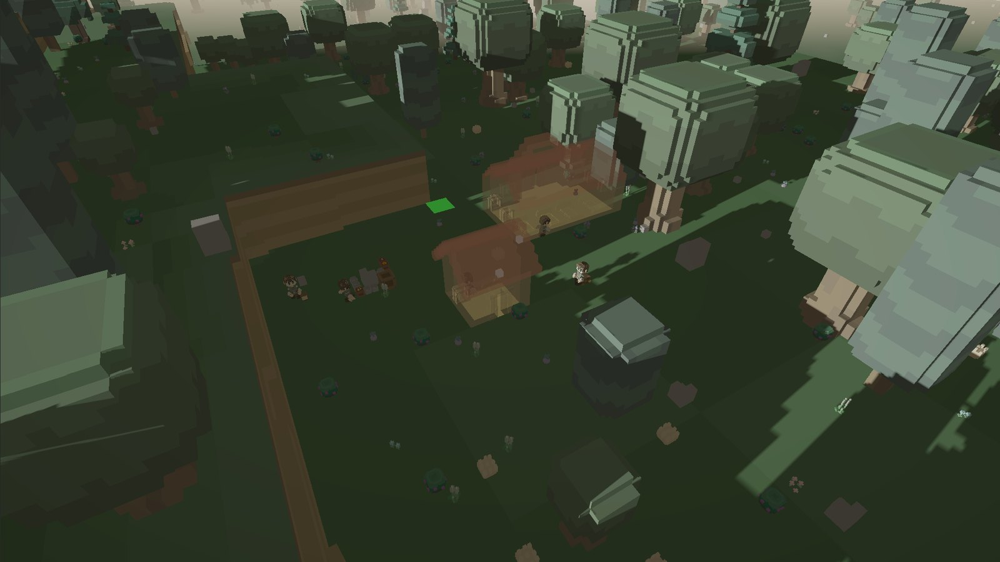
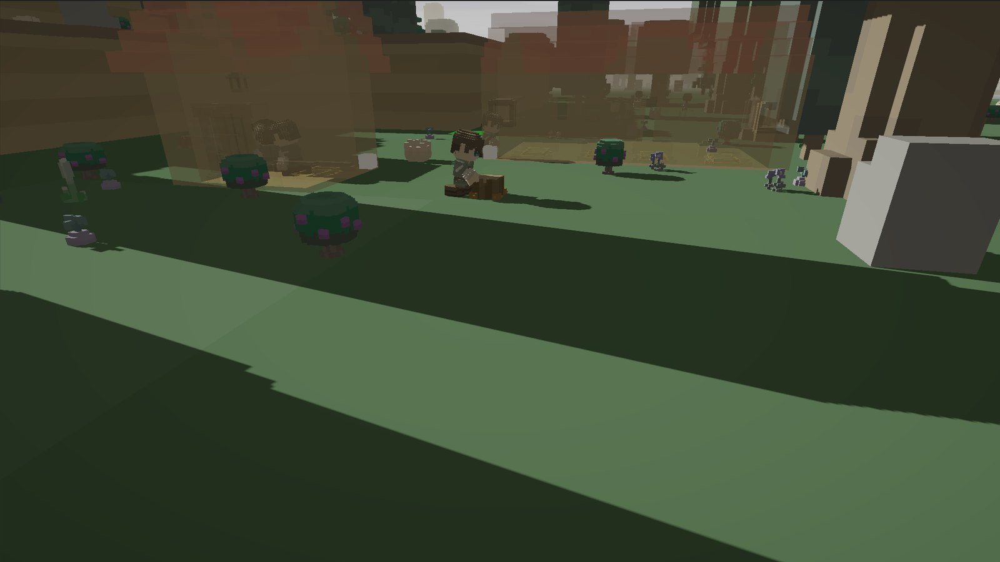

现在
世界模拟已经可以独立运行，居民行为仍在完善。
在没有居民的情况下，物质、时间、昼夜与地形仍能持续运转。居民已经能够感知周围环境、做出决定并执行行动；建造、寻路与材料搬运仍在开发中。
- 世界模拟
- 已完成
- 物质、时间、温度、地形
- 居民智能
- 进行中
- 需求、感知、决策、行动
- 行为系统
- 进行中
- 寻路、建造、采集、搬运
- 基础系统
- 已接入
- 统一时间轴、种子、配置
玩家引导将在居民能够稳定生活后加入。

居民
居民如何自主生活
居民根据需求、环境与已有计划自主选择行动，不依赖玩家逐条指令。每次决策都会转化为具体行动，并通过结果判断目标是否推进。
高层模型负责任务选择，具体执行由规则系统与行为配方完成。模型不直接控制每一次动作，模拟仍保持确定性。
查看居民智能的技术结构
日志
开发日志
2026-10-20 阴影像素对齐与村庄袭击接入 2026-10-19 第一阶段收尾：居民行为接入关于
关于我
我是一名独立开发者，正在开发一款以体素世界和自主居民为核心的模拟游戏。项目从世界规则入手，先建立能够独立运转的模拟，再引入玩家参与。
我负责设计方向、规则定义与验收；实现使用 Unity 和 C#，AI 辅助代码起草、资料检索与重复检查。
如果你也在从事模拟、智能体或体素方向的工作，欢迎通过 GitHub 联系我。